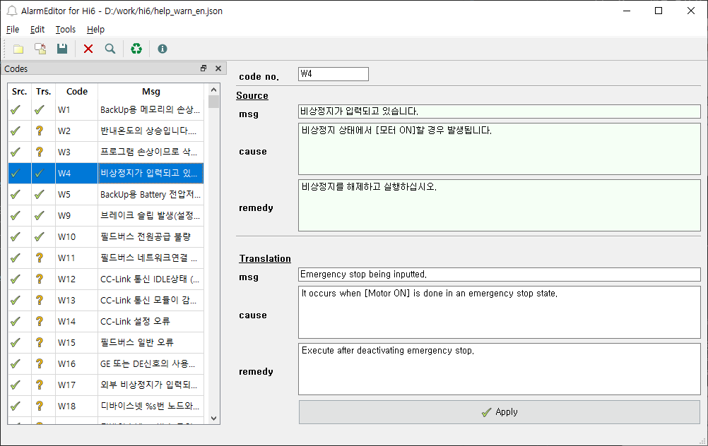
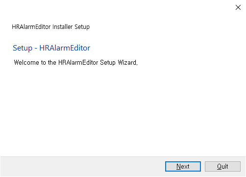
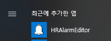
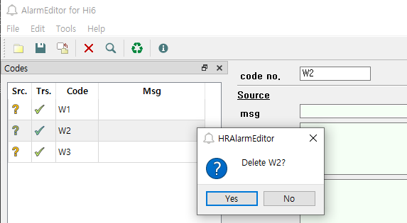
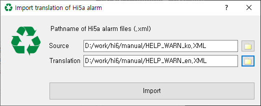
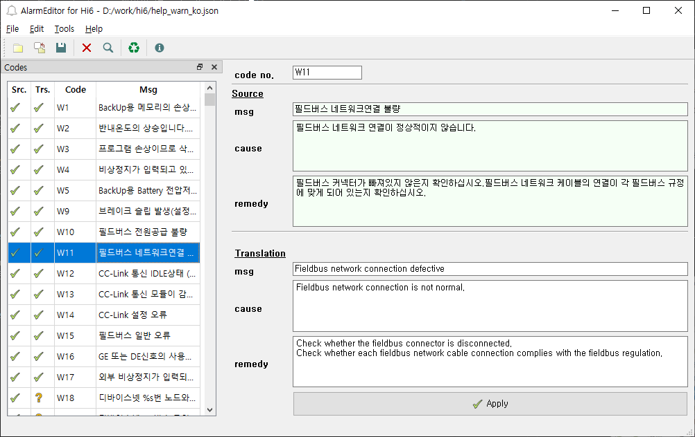

Hi6 제어기는 alarm 메시지(에러/경고/알림)와 도움말을 .json 형식으로 보관합니다.
새로운 알람이 추가되거나 수정이 필요할 때는 이 .json 파일을 편집하게 됩니다.
또한, Hi6 제어기의 다국어 패키지를 제작할 때도, 이 .json 파일의 번역본을 작성해야 합니다.
.json 파일을 메모장 등의 텍스트편집기로 직접 편집해도 되나, 실수로 .json 형식상의 오류가 포함될 경우 Hi6 제어기 부팅 시 메시지 파일 로딩이 실패할 우려가 있습니다.
HRAlarmEditor는 alarm 메시지와 도움말을 쉽게 편집하는 환경을 제공해주는 무료 유틸리티입니다. .json 파일로 형식 오류 없이 저장할 수 있으며, Hi5a의 .xml 형식으로 작성된 alarm 도움말을 import 해주는 기능도 제공합니다.
구버전이 설치되어 있으면 먼저 설치 제거 하십시오.
HRAlarmEditorInstaller.exe를 실행하십시오. (subst로 생성한 드라이브에서 실행하면 설치 실패할 수 있으니 유의하십시오.)
Next 버튼을 클릭하면서 설치를 진행하십시오.
윈도우 시작 버튼에서 HRAlarmEditor를 클릭하여 실행하십시오.

우상단의 code no.에 새로운 코드번호를 입력하고 우하단의 Translation에 메시지와 도움말을 입력하십시오.
우하단의 Apply 버튼을 클릭하면 입력한 alarm 코드가 좌측의 code 목록에 표시됩니다.
이러한 절차를 반복하면서 alarm 코드들을 하나씩 추가할 수 있습니다.
Edit - Delete 메뉴, 혹은 툴 버튼으로 선택한 항목을 삭제할 수도 있습니다.

File - Save as... 메뉴를 선택하여, 편집한 내용을 .json 파일로 저장할 수 있습니다.
File - Open... 메뉴, 혹은 툴 버튼으로 저장한 .json 파일을 불러올 수 있습니다.
File - Open Source File... 메뉴, 혹은 툴 버튼으로 원본 파일을 불러옵니다.
만일 편집하던 번역본 .json 파일이 있다면, File - Open... 메뉴, 혹은 툴 버튼으로 불러오기를 합니다.
좌측 code 목록에서 Src.열은 원본(Source)의 존재 여부, Trs.는 번역본(Trans.)의 존재 여부를 표시합니다. 체크표시는 존재함, 물음표는 존재하지 않음을 의미합니다.
우측 편집기 화면에서 상단에는 원본의 메시지와 도움말이 표시되지만 편집할 수는 없습니다. 하단은 번역본의 메시지와 도움말의 편집 영역입니다. 번역을 작성한 후 하단의 Apply 버튼을 클릭하면 적용됩니다. 메시지에 문자열을 입력한 경우, 해당 코드의 Trs.열은 체크표시로 변경됩니다.
Hi5a의 Alarm 도움말은 Hi6와 70~80% 가량 동일합니다. 따라서, 이미 Hi5a에서 번역작업을 마친 언어라면, 이를 일부 Hi6에 재활용함으로써 불필요한 중복 번역 작업을 피할 수 있습니다.
우선, 이전 절에서 설명한 방법 대로 원본 .json 파일을 여십시오.
다음으로 Tools - Import Hi5a Translation 메뉴, 혹은 툴 버튼으로 import 대화상자를 여십시오.
대화상자의 Source와 Translation 입력 칸에 Hi5a의 원본과 번역본 .xml 파일의 경로파일명을 각각 입력하십시오. 우측의 버튼을 클릭하여 파일 열기 대화상자에서 선택할 수도 있습니다.
import 버튼을 클릭하면 Hi5a 원본의 각 alarm 코드에 대해 Hi6의 원본의 각 alarm 코드와 비교합니다. 두 원본의 메시지가 동일할 경우, Hi5a의 번역본 도움말을 Hi6의 번역본으로 복사해줍니다.
import 되지 못한 나머지 alarm 코드들에 대해서 번역 작업을 수행하십시오.
